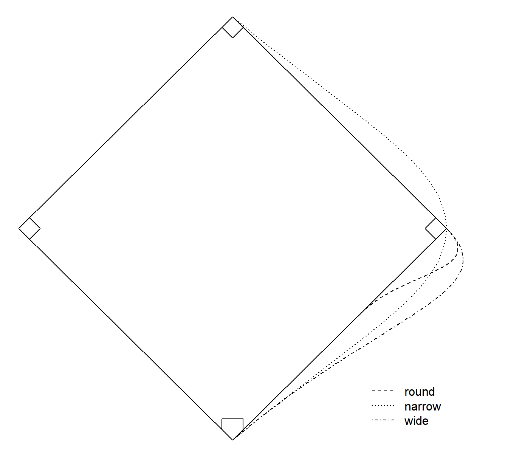
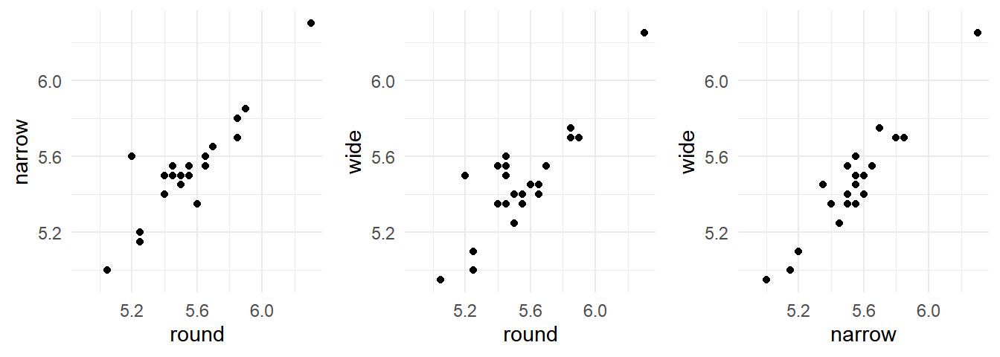
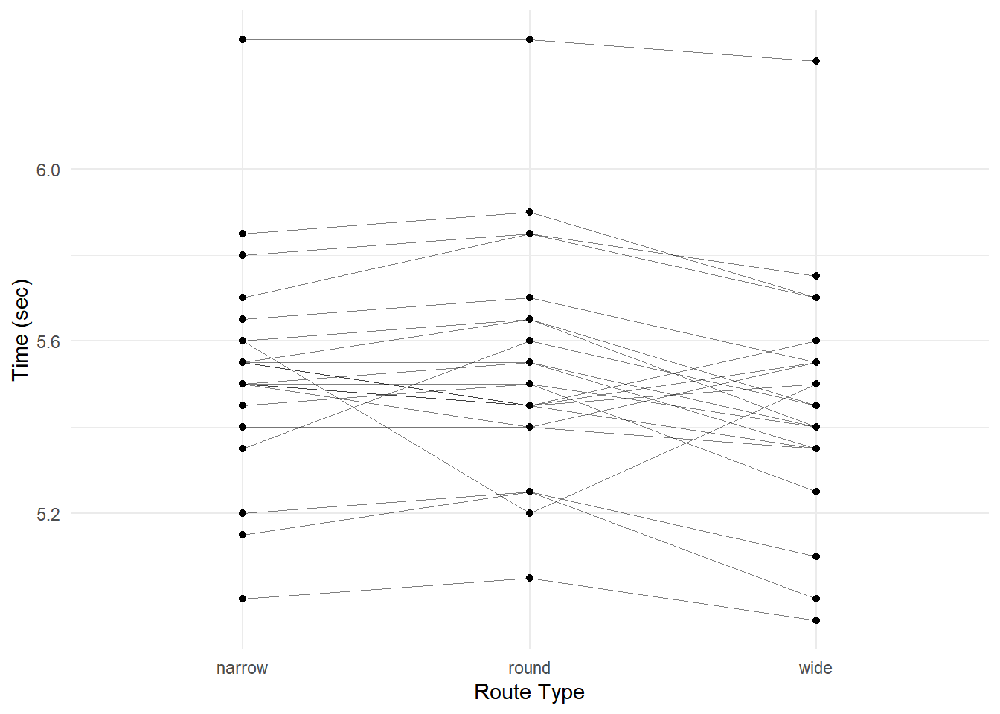
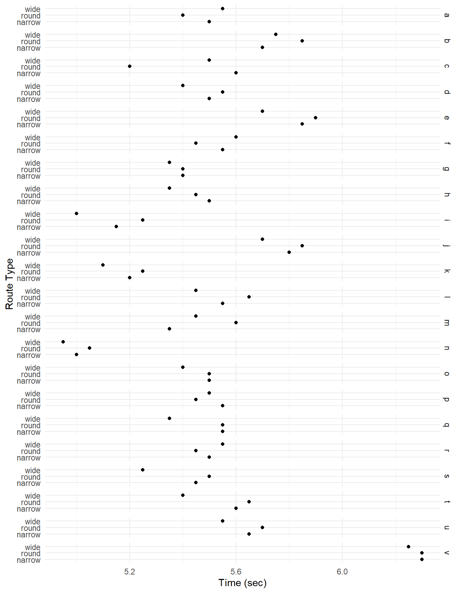
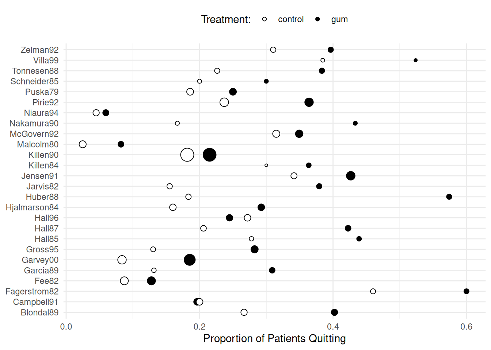
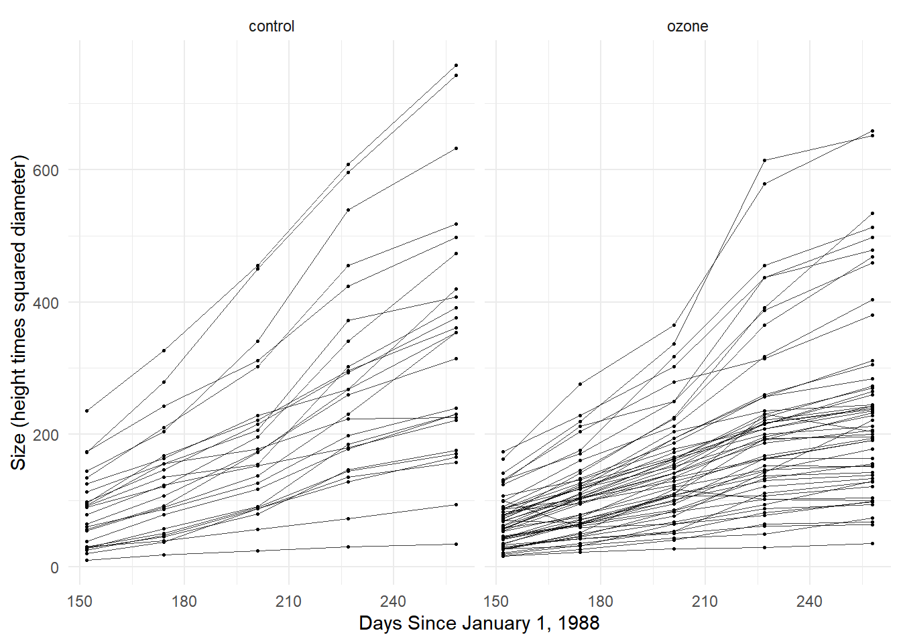

You can also download a PDF copy of this lecture.
Some kinds of designs result in a “factor” with a relatively large number of levels, where each level corresponds to an experimental/observational unit. This can arise for a variety of reasons. Such designs include repeated measures, longitudinal data, panel data, multilevel data, pseudo-replication, within-subjects factors, dependent samples, and clustered data to name a few (these are not mutually exclusive). Having a factor with a large number of levels can cause complications. This is known in econometrics as the “incidental parameter problem.”
Example: Consider a study of the running times of three routes from home to second base on a baseball diamond.

library(trtools)
head(baserun) round narrow wide
1 5.40 5.50 5.55
2 5.85 5.70 5.75
3 5.20 5.60 5.50
4 5.55 5.50 5.40
5 5.90 5.85 5.70
6 5.45 5.55 5.60There is a considerable “effect” for the player. Players who are relatively fast/slow on one route tend to also be relatively fast/slow on the other routes.
p <- ggplot(baserun, aes(x = round, y = narrow)) + theme_minimal() +
geom_point() + xlim(4.9,6.3) + ylim(4.95,6.3)
p1 <- p
p <- ggplot(baserun, aes(x = round, y = wide)) + theme_minimal() +
geom_point() + xlim(4.9,6.3) + ylim(4.95,6.3)
p2 <- p
p <- ggplot(baserun, aes(x = narrow, y = wide)) + theme_minimal() +
geom_point() + xlim(4.9,6.3) + ylim(4.95,6.3)
p3 <- p
cowplot::plot_grid(p1, p2, p3, align = "h", ncol = 3)
These data are in what is sometimes called “wide form” where there are multiple observations per unit (player) in a single row. For plotting and modeling it is often useful to “reshape” the data into “long form” with one observation of the response variable (running time) per row.library(dplyr)
library(tidyr)
baselong <- baserun %>% mutate(player = factor(letters[1:n()])) %>%
pivot_longer(cols = c(round, narrow, wide),
names_to = "route", values_to = "time")
head(baselong)# A tibble: 6 × 3
player route time
<fct> <chr> <dbl>
1 a round 5.4
2 a narrow 5.5
3 a wide 5.55
4 b round 5.85
5 b narrow 5.7
6 b wide 5.75p <- ggplot(baselong, aes(x = route, y = time)) +
geom_line(aes(group = player), linewidth = 0.25, alpha = 0.5) +
geom_point() + theme_minimal() +
labs(x = "Route Type", y = "Time (sec)")
plot(p)
p <- ggplot(baselong, aes(x = time, y = route)) +
geom_point() + theme_minimal() + facet_grid(player ~ .) +
labs(y = "Route Type", x = "Time (sec)")
plot(p)
Again note that there appears to be a “player effect” in that the players show similar results over the routes.What could we do (but not necessarily what we should do) in modeling these data.
We could ignore the effect of player.
m <- lm(time ~ route, data = baselong)
summary(m)$coefficients Estimate Std. Error t value Pr(>|t|)
(Intercept) 5.53409 0.0572 96.784 3.05e-70
routeround 0.00909 0.0809 0.112 9.11e-01
routewide -0.07500 0.0809 -0.927 3.57e-01Or we could model the effect of player as a factor.
m <- lm(time ~ route + player, data = baselong)
summary(m)$coefficients Estimate Std. Error t value Pr(>|t|)
(Intercept) 5.51e+00 0.0521 1.06e+02 1.32e-52
routeround 9.09e-03 0.0260 3.49e-01 7.29e-01
routewide -7.50e-02 0.0260 -2.88e+00 6.21e-03
playerb 2.83e-01 0.0705 4.02e+00 2.37e-04
playerc -5.00e-02 0.0705 -7.09e-01 4.82e-01
playerd 1.18e-15 0.0705 1.67e-14 1.00e+00
playere 3.33e-01 0.0705 4.73e+00 2.55e-05
playerf 5.00e-02 0.0705 7.09e-01 4.82e-01
playerg -1.00e-01 0.0705 -1.42e+00 1.63e-01
playerh -5.00e-02 0.0705 -7.09e-01 4.82e-01
playeri -3.50e-01 0.0705 -4.97e+00 1.19e-05
playerj 3.00e-01 0.0705 4.26e+00 1.14e-04
playerk -3.00e-01 0.0705 -4.26e+00 1.14e-04
playerl 6.67e-02 0.0705 9.46e-01 3.50e-01
playerm -1.67e-02 0.0705 -2.36e-01 8.14e-01
playern -4.83e-01 0.0705 -6.86e+00 2.32e-08
playero -1.67e-02 0.0705 -2.36e-01 8.14e-01
playerp 1.67e-02 0.0705 2.36e-01 8.14e-01
playerq 8.79e-16 0.0705 1.25e-14 1.00e+00
playerr 1.67e-02 0.0705 2.36e-01 8.14e-01
players -8.33e-02 0.0705 -1.18e+00 2.44e-01
playert 6.67e-02 0.0705 9.46e-01 3.50e-01
playeru 1.50e-01 0.0705 2.13e+00 3.92e-02
playerv 8.00e-01 0.0705 1.14e+01 2.24e-14Or maybe we could do something else?
Example: Consider the following data from a meta-analysis of 26 studies of the effect of nicotine gum on smoking cessation.
library(HSAUR3) # for the data
head(smoking) qt tt qc tc
Blondal89 37 92 24 90
Campbell91 21 107 21 105
Fagerstrom82 30 50 23 50
Fee82 23 180 15 172
Garcia89 21 68 5 38
Garvey00 75 405 17 203Here qt and tc are the total number of
subjects in the treatment and control groups, respectively, and
tt and tc are the total number of subjects in
the treatment and control groups, respectively.
These data require some rearranging prior to plotting and analysis.
(Note: I’m using dplyr::select rather than just
select because of a conflict with a function of the same
name with another package I have loaded.)
library(dplyr)
library(tidyr)
quitsmoke <- smoking
quitsmoke$study <- rownames(quitsmoke)
quitsmoke.quits <- quitsmoke %>% dplyr::select(study, qt, qc) %>%
rename(gum = qt, control = qc) %>%
pivot_longer(cols = c(gum,control),
names_to = "treatment", values_to = "quit")
head(quitsmoke.quits)# A tibble: 6 × 3
study treatment quit
<chr> <chr> <int>
1 Blondal89 gum 37
2 Blondal89 control 24
3 Campbell91 gum 21
4 Campbell91 control 21
5 Fagerstrom82 gum 30
6 Fagerstrom82 control 23quitsmoke.total <- quitsmoke %>% dplyr::select(study, tt, tc) %>%
rename(gum = tt, control = tc) %>%
pivot_longer(cols = c(gum,control), names_to = "treatment", values_to = "total")
head(quitsmoke.total)# A tibble: 6 × 3
study treatment total
<chr> <chr> <int>
1 Blondal89 gum 92
2 Blondal89 control 90
3 Campbell91 gum 107
4 Campbell91 control 105
5 Fagerstrom82 gum 50
6 Fagerstrom82 control 50quitsmoke <- full_join(quitsmoke.quits, quitsmoke.total) %>% mutate(study = factor(study)) %>% arrange(study)
head(quitsmoke)# A tibble: 6 × 4
study treatment quit total
<fct> <chr> <int> <int>
1 Blondal89 gum 37 92
2 Blondal89 control 24 90
3 Campbell91 gum 21 107
4 Campbell91 control 21 105
5 Fagerstrom82 gum 30 50
6 Fagerstrom82 control 23 50p <- ggplot(quitsmoke, aes(x = study, y = quit/total,
size = total, fill = treatment)) + geom_point(pch = 21) +
coord_flip() + guides(size = "none") +
scale_fill_manual(values = c("White","Black")) + theme_minimal() +
labs(x = NULL, y = "Proportion of Patients Quitting",
fill = "Treatment:") + theme(legend.position = "top")
plot(p)
The studies may vary considerably in terms of (a) the proportion of subjects that quit overall and (b) the effectiveness of the gum treatment relative to the control condition.What could we do (but not necessarily what we should do) in modeling these data.
We could ignore the effect of study.
m <- glm(cbind(quit, total - quit) ~ treatment,
family = binomial, data = quitsmoke)
summary(m)$coefficients Estimate Std. Error z value Pr(>|z|)
(Intercept) -1.450 0.0490 -29.59 1.76e-192
treatmentgum 0.507 0.0631 8.04 9.11e-16Or we could model the main effect of study.
m <- glm(cbind(quit, total - quit) ~ treatment + study,
family = binomial, data = quitsmoke)
summary(m)$coefficients Estimate Std. Error z value Pr(>|z|)
(Intercept) -0.9561 0.1622 -5.893 3.78e-09
treatmentgum 0.5148 0.0657 7.834 4.74e-15
studyCampbell91 -0.7218 0.2346 -3.077 2.09e-03
studyFagerstrom82 0.8209 0.2566 3.199 1.38e-03
studyFee82 -1.4447 0.2339 -6.176 6.57e-10
studyGarcia89 -0.5137 0.2768 -1.856 6.35e-02
studyGarvey00 -1.1312 0.1951 -5.797 6.75e-09
studyGross95 -0.5748 0.2372 -2.424 1.54e-02
studyHall85 0.1132 0.2863 0.395 6.93e-01
studyHall87 -0.0887 0.2424 -0.366 7.14e-01
studyHall96 -0.3636 0.2265 -1.605 1.08e-01
studyHjalmarson84 -0.5455 0.2300 -2.372 1.77e-02
studyHuber88 0.1647 0.2516 0.654 5.13e-01
studyJarvis82 -0.3254 0.2638 -1.233 2.17e-01
studyJensen91 0.1852 0.1989 0.931 3.52e-01
studyKillen84 -0.0539 0.3086 -0.175 8.61e-01
studyKillen90 -0.7163 0.1739 -4.119 3.81e-05
studyMalcolm80 -2.2897 0.3767 -6.078 1.21e-09
studyMcGovern92 -0.0235 0.2043 -0.115 9.08e-01
studyNakamura90 -0.1619 0.3248 -0.498 6.18e-01
studyNiaura94 -2.2260 0.3776 -5.894 3.76e-09
studyPirie92 -0.1599 0.1913 -0.836 4.03e-01
studyPuska79 -0.5987 0.2256 -2.654 7.96e-03
studySchneider85 -0.4165 0.3391 -1.228 2.19e-01
studyTonnesen88 -0.1313 0.2588 -0.507 6.12e-01
studyVilla99 0.5093 0.3355 1.518 1.29e-01
studyZelman92 0.0851 0.2516 0.338 7.35e-01We could also model an interaction of the treatment with the study.
m <- glm(cbind(quit, total - quit) ~ treatment * study,
family = binomial, data = quitsmoke)
summary(m)$coefficients Estimate Std. Error z value Pr(>|z|)
(Intercept) -1.01160 0.238 -4.2439 2.20e-05
treatmentgum 0.61519 0.319 1.9260 5.41e-02
studyCampbell91 -0.37469 0.341 -1.0985 2.72e-01
studyFagerstrom82 0.85126 0.371 2.2971 2.16e-02
studyFee82 -1.33659 0.360 -3.7091 2.08e-04
studyGarcia89 -0.87547 0.536 -1.6338 1.02e-01
studyGarvey00 -1.38093 0.348 -3.9696 7.20e-05
studyGross95 -0.88552 0.498 -1.7764 7.57e-02
studyHall85 0.05609 0.442 0.1269 8.99e-01
studyHall87 -0.33833 0.383 -0.8831 3.77e-01
studyHall96 0.02632 0.325 0.0809 9.36e-01
studyHjalmarson84 -0.64663 0.362 -1.7850 7.43e-02
studyHuber88 -0.48232 0.410 -1.1763 2.39e-01
studyJarvis82 -0.68299 0.434 -1.5738 1.16e-01
studyJensen91 0.35482 0.333 1.0648 2.87e-01
studyKillen84 0.16430 0.543 0.3026 7.62e-01
studyKillen90 -0.49446 0.260 -1.9000 5.74e-02
studyMalcolm80 -2.66047 0.631 -4.2138 2.51e-05
studyMcGovern92 0.23457 0.305 0.7679 4.43e-01
studyNakamura90 -0.59784 0.545 -1.0973 2.72e-01
studyNiaura94 -2.04476 0.564 -3.6227 2.92e-04
studyPirie92 -0.15778 0.288 -0.5476 5.84e-01
studyPuska79 -0.46567 0.340 -1.3713 1.70e-01
studySchneider85 -0.37469 0.515 -0.7277 4.67e-01
studyTonnesen88 -0.21706 0.406 -0.5351 5.93e-01
studyVilla99 0.54160 0.468 1.1565 2.47e-01
studyZelman92 0.21309 0.371 0.5749 5.65e-01
treatmentgum:studyCampbell91 -0.63872 0.470 -1.3593 1.74e-01
treatmentgum:studyFagerstrom82 -0.04938 0.516 -0.0958 9.24e-01
treatmentgum:studyFee82 -0.18774 0.474 -0.3959 6.92e-01
treatmentgum:studyGarcia89 0.46626 0.633 0.7361 4.62e-01
treatmentgum:studyGarvey00 0.29574 0.427 0.6921 4.89e-01
treatmentgum:studyGross95 0.34956 0.576 0.6073 5.44e-01
treatmentgum:studyHall85 0.09520 0.583 0.1634 8.70e-01
treatmentgum:studyHall87 0.42237 0.500 0.8452 3.98e-01
treatmentgum:studyHall96 -0.75591 0.454 -1.6644 9.60e-02
treatmentgum:studyHjalmarson84 0.15954 0.471 0.3386 7.35e-01
treatmentgum:studyHuber88 1.17723 0.538 2.1895 2.86e-02
treatmentgum:studyJarvis82 0.58693 0.554 1.0597 2.89e-01
treatmentgum:studyJensen91 -0.25439 0.419 -0.6070 5.44e-01
treatmentgum:studyKillen84 -0.32750 0.662 -0.4947 6.21e-01
treatmentgum:studyKillen90 -0.40417 0.350 -1.1533 2.49e-01
treatmentgum:studyMalcolm80 0.64395 0.791 0.8143 4.15e-01
treatmentgum:studyMcGovern92 -0.46021 0.411 -1.1206 2.62e-01
treatmentgum:studyNakamura90 0.72599 0.691 1.0503 2.94e-01
treatmentgum:studyNiaura94 -0.31884 0.759 -0.4199 6.75e-01
treatmentgum:studyPirie92 -0.00351 0.386 -0.0091 9.93e-01
treatmentgum:studyPuska79 -0.23653 0.454 -0.5205 6.03e-01
treatmentgum:studySchneider85 -0.07619 0.685 -0.1112 9.11e-01
treatmentgum:studyTonnesen88 0.13806 0.529 0.2608 7.94e-01
treatmentgum:studyVilla99 -0.04987 0.675 -0.0739 9.41e-01
treatmentgum:studyZelman92 -0.23653 0.505 -0.4687 6.39e-01Or maybe we could do something else?
Example: Consider the following data from a study of the growth of Sitka spruce trees under two experimental conditions.
library(MASS)
head(Sitka, 10) # note that size is on log scale size Time tree treat
1 4.51 152 1 ozone
2 4.98 174 1 ozone
3 5.41 201 1 ozone
4 5.90 227 1 ozone
5 6.15 258 1 ozone
6 4.24 152 2 ozone
7 4.20 174 2 ozone
8 4.68 201 2 ozone
9 4.92 227 2 ozone
10 4.96 258 2 ozoneSitka$treesize <- exp(Sitka$size)
p <- ggplot(Sitka, aes(x = Time, y = treesize)) +
geom_line(aes(group = tree), alpha = 0.75, linewidth = 0.1) +
facet_wrap(~ treat) + geom_point(size = 0.5) +
labs(y = "Size (height times squared diameter)",
x = "Days Since January 1, 1988") + theme_minimal()
plot(p)
Note that trees vary considerably in terms of their growth trajectories.What could we do (but not necessarily what we should do) in modeling these data.
We could ignore the effect of tree.
m <- lm(treesize ~ Time * treat, data = Sitka)
summary(m)$coefficients Estimate Std. Error t value Pr(>|t|)
(Intercept) -305.123 52.711 -5.79 1.46e-08
Time 2.509 0.256 9.80 2.03e-20
treatozone 110.675 63.755 1.74 8.34e-02
Time:treatozone -0.788 0.310 -2.54 1.13e-02Or we could model the effect of tree.
Sitka$tree <- factor(Sitka$tree)
m <- lm(treesize ~ Time * treat + Time * tree, data = Sitka)
summary(m)$coefficients Estimate Std. Error t value Pr(>|t|)
(Intercept) -1.97e+02 48.007 -4.1123 5.41e-05
Time 1.41e+00 0.233 6.0396 5.93e-09
treatozone -2.91e+02 67.892 -4.2886 2.62e-05
tree2 4.28e+02 67.892 6.3030 1.41e-09
tree3 3.97e+02 67.892 5.8478 1.64e-08
tree4 3.78e+02 67.892 5.5673 6.99e-08
tree5 -1.32e+02 67.892 -1.9382 5.38e-02
tree6 1.41e+02 67.892 2.0738 3.92e-02
tree7 3.72e+02 67.892 5.4802 1.08e-07
tree8 2.97e+02 67.892 4.3739 1.83e-05
tree9 6.93e-01 67.892 0.0102 9.92e-01
tree10 4.33e+02 67.892 6.3744 9.50e-10
tree11 3.81e+02 67.892 5.6068 5.72e-08
tree12 2.50e+02 67.892 3.6849 2.83e-04
tree13 2.47e+02 67.892 3.6451 3.28e-04
tree14 3.65e+02 67.892 5.3794 1.79e-07
tree15 5.51e+02 67.892 8.1198 2.56e-14
tree16 3.86e+02 67.892 5.6921 3.69e-08
tree17 3.97e+02 67.892 5.8423 1.69e-08
tree18 4.36e+02 67.892 6.4158 7.54e-10
tree19 4.14e+02 67.892 6.1024 4.23e-09
tree20 3.51e+02 67.892 5.1690 5.00e-07
tree21 3.70e+02 67.892 5.4475 1.28e-07
tree22 3.21e+02 67.892 4.7231 3.98e-06
tree23 2.70e+02 67.892 3.9806 9.14e-05
tree24 4.81e+02 67.892 7.0840 1.59e-11
tree25 2.20e+02 67.892 3.2440 1.35e-03
tree26 3.69e+02 67.892 5.4406 1.32e-07
tree27 2.63e+02 67.892 3.8725 1.39e-04
tree28 3.24e+02 67.892 4.7655 3.29e-06
tree29 4.93e+01 67.892 0.7256 4.69e-01
tree30 2.90e+02 67.892 4.2711 2.82e-05
tree31 3.63e+02 67.892 5.3397 2.18e-07
tree32 3.19e+02 67.892 4.7010 4.39e-06
tree33 3.23e+02 67.892 4.7548 3.45e-06
tree34 3.56e+02 67.892 5.2467 3.43e-07
tree35 1.63e+02 67.892 2.4006 1.71e-02
tree36 4.55e+02 67.892 6.7025 1.48e-10
tree37 -8.90e+01 67.892 -1.3113 1.91e-01
tree38 1.93e+02 67.892 2.8407 4.89e-03
tree39 1.37e+02 67.892 2.0145 4.51e-02
tree40 3.08e+02 67.892 4.5327 9.24e-06
tree41 -1.97e+02 67.892 -2.9058 4.01e-03
tree42 3.19e+02 67.892 4.7004 4.41e-06
tree43 2.34e+02 67.892 3.4434 6.79e-04
tree44 3.06e+02 67.892 4.5113 1.01e-05
tree45 4.26e+02 67.892 6.2750 1.65e-09
tree46 2.80e+02 67.892 4.1250 5.13e-05
tree47 3.29e+02 67.892 4.8446 2.29e-06
tree48 3.64e+02 67.892 5.3660 1.91e-07
tree49 4.05e+02 67.892 5.9724 8.50e-09
tree50 3.93e+02 67.892 5.7923 2.20e-08
tree51 3.52e+02 67.892 5.1810 4.72e-07
tree52 2.66e+02 67.892 3.9244 1.14e-04
tree53 4.72e+02 67.892 6.9581 3.35e-11
tree54 3.55e+02 67.892 5.2339 3.65e-07
tree55 1.23e+02 67.892 1.8046 7.24e-02
tree56 -4.33e+02 67.892 -6.3798 9.22e-10
tree57 8.88e+01 67.892 1.3076 1.92e-01
tree58 -1.15e+02 67.892 -1.6947 9.15e-02
tree59 -2.00e+02 67.892 -2.9462 3.54e-03
tree60 -1.66e+02 67.892 -2.4433 1.53e-02
tree61 -4.67e+02 67.892 -6.8724 5.53e-11
tree62 -2.06e+01 67.892 -0.3027 7.62e-01
tree63 1.12e+01 67.892 0.1644 8.70e-01
tree64 1.74e+02 67.892 2.5672 1.09e-02
tree65 -4.37e+01 67.892 -0.6433 5.21e-01
tree66 8.09e+00 67.892 0.1192 9.05e-01
tree67 -1.05e+02 67.892 -1.5480 1.23e-01
tree68 -2.05e+02 67.892 -3.0179 2.82e-03
tree69 -1.76e+02 67.892 -2.5978 9.97e-03
tree70 -7.68e+01 67.892 -1.1315 2.59e-01
tree71 -2.49e+02 67.892 -3.6695 3.00e-04
tree72 -9.72e+01 67.892 -1.4317 1.54e-01
tree73 -3.40e+02 67.892 -5.0103 1.06e-06
tree74 -1.16e+02 67.892 -1.7143 8.78e-02
tree75 -9.12e+01 67.892 -1.3429 1.81e-01
tree76 -1.13e+01 67.892 -0.1665 8.68e-01
tree77 1.34e+02 67.892 1.9673 5.03e-02
tree78 -3.18e+02 67.892 -4.6784 4.86e-06
Time:treatozone 2.28e+00 0.330 6.9248 4.07e-11
Time:tree2 -2.88e+00 0.330 -8.7184 5.01e-16
Time:tree3 -2.69e+00 0.330 -8.1702 1.85e-14
Time:tree4 -2.38e+00 0.330 -7.2218 6.95e-12
Time:tree5 7.25e-01 0.330 2.1968 2.90e-02
Time:tree6 -7.95e-01 0.330 -2.4118 1.66e-02
Time:tree7 -2.41e+00 0.330 -7.3159 3.93e-12
Time:tree8 -1.98e+00 0.330 -6.0148 6.77e-09
Time:tree9 2.84e-01 0.330 0.8620 3.90e-01
Time:tree10 -2.98e+00 0.330 -9.0227 6.44e-17
Time:tree11 -2.57e+00 0.330 -7.7950 2.03e-13
Time:tree12 -1.60e+00 0.330 -4.8386 2.36e-06
Time:tree13 -1.54e+00 0.330 -4.6611 5.25e-06
Time:tree14 -2.27e+00 0.330 -6.8839 5.17e-11
Time:tree15 -3.61e+00 0.330 -10.9381 8.24e-23
Time:tree16 -2.72e+00 0.330 -8.2444 1.14e-14
Time:tree17 -2.38e+00 0.330 -7.2213 6.97e-12
Time:tree18 -3.22e+00 0.330 -9.7514 4.17e-19
Time:tree19 -2.93e+00 0.330 -8.8897 1.59e-16
Time:tree20 -2.25e+00 0.330 -6.8180 7.60e-11
Time:tree21 -2.47e+00 0.330 -7.4922 1.34e-12
Time:tree22 -2.34e+00 0.330 -7.0809 1.62e-11
Time:tree23 -1.81e+00 0.330 -5.4800 1.09e-07
Time:tree24 -3.53e+00 0.330 -10.6923 4.96e-22
Time:tree25 -1.86e+00 0.330 -5.6260 5.18e-08
Time:tree26 -2.74e+00 0.330 -8.3207 6.94e-15
Time:tree27 -1.92e+00 0.330 -5.8195 1.91e-08
Time:tree28 -2.03e+00 0.330 -6.1674 2.97e-09
Time:tree29 -7.20e-02 0.330 -0.2184 8.27e-01
Time:tree30 -1.42e+00 0.330 -4.2989 2.51e-05
Time:tree31 -2.59e+00 0.330 -7.8588 1.35e-13
Time:tree32 -2.06e+00 0.330 -6.2604 1.79e-09
Time:tree33 -2.00e+00 0.330 -6.0723 4.97e-09
Time:tree34 -2.41e+00 0.330 -7.2951 4.46e-12
Time:tree35 -4.64e-01 0.330 -1.4075 1.61e-01
Time:tree36 -3.14e+00 0.330 -9.5222 2.07e-18
Time:tree37 1.18e+00 0.330 3.5697 4.33e-04
Time:tree38 -1.31e+00 0.330 -3.9719 9.46e-05
Time:tree39 -5.34e-01 0.330 -1.6194 1.07e-01
Time:tree40 -2.08e+00 0.330 -6.3047 1.40e-09
Time:tree41 1.64e+00 0.330 4.9613 1.34e-06
Time:tree42 -2.07e+00 0.330 -6.2846 1.56e-09
Time:tree43 -1.62e+00 0.330 -4.9060 1.73e-06
Time:tree44 -2.23e+00 0.330 -6.7641 1.04e-10
Time:tree45 -3.17e+00 0.330 -9.6160 1.08e-18
Time:tree46 -1.81e+00 0.330 -5.4984 9.89e-08
Time:tree47 -2.23e+00 0.330 -6.7747 9.77e-11
Time:tree48 -2.72e+00 0.330 -8.2330 1.23e-14
Time:tree49 -2.98e+00 0.330 -9.0370 5.84e-17
Time:tree50 -2.94e+00 0.330 -8.9061 1.42e-16
Time:tree51 -2.61e+00 0.330 -7.9124 9.63e-14
Time:tree52 -2.00e+00 0.330 -6.0662 5.14e-09
Time:tree53 -3.37e+00 0.330 -10.2156 1.55e-20
Time:tree54 -2.54e+00 0.330 -7.6885 3.95e-13
Time:tree55 -1.73e-01 0.330 -0.5241 6.01e-01
Time:tree56 3.55e+00 0.330 10.7499 3.26e-22
Time:tree57 -1.25e-01 0.330 -0.3794 7.05e-01
Time:tree58 1.25e+00 0.330 3.7912 1.90e-04
Time:tree59 1.41e+00 0.330 4.2787 2.73e-05
Time:tree60 1.63e+00 0.330 4.9338 1.52e-06
Time:tree61 4.09e+00 0.330 12.3869 1.67e-27
Time:tree62 3.71e-01 0.330 1.1263 2.61e-01
Time:tree63 -4.08e-02 0.330 -0.1239 9.02e-01
Time:tree64 -1.18e+00 0.330 -3.5808 4.15e-04
Time:tree65 4.17e-01 0.330 1.2633 2.08e-01
Time:tree66 6.26e-03 0.330 0.0190 9.85e-01
Time:tree67 1.72e+00 0.330 5.2026 4.25e-07
Time:tree68 1.51e+00 0.330 4.5816 7.46e-06
Time:tree69 1.50e+00 0.330 4.5506 8.55e-06
Time:tree70 1.07e+00 0.330 3.2580 1.29e-03
Time:tree71 2.40e+00 0.330 7.2715 5.15e-12
Time:tree72 1.24e+00 0.330 3.7532 2.20e-04
Time:tree73 3.60e+00 0.330 10.9203 9.39e-23
Time:tree74 1.05e+00 0.330 3.1855 1.64e-03
Time:tree75 6.03e-01 0.330 1.8269 6.90e-02
Time:tree76 9.33e-02 0.330 0.2829 7.78e-01
Time:tree77 -8.04e-01 0.330 -2.4389 1.55e-02
Time:tree78 2.34e+00 0.330 7.1052 1.40e-11Or maybe we could do something else?
A marginal model ignores the many-leveled factor. One approach to estimating such models is to use what can be viewed as an extension of quasi-likelihood called generalized estimating equations (GEE). This approach actually involves two parts.
Estimate the model using generalized estimating equations. This uses an iterative generalized least squares that uses an estimated “working” correlation structure. This can be viewed as an extension of the iteratively weighted least squares algorithm we used earlier.
Compute robust estimates of standard errors to account for heteroscedasticity and correlations among observations. These are designed to deal with the fact that our observations are not independent.
Example: Consider two approaches to the
baserun data: ignoring the player effect entirely and a
marginal model with inferences based on GEE.
library(geepack)
# generalized linear model, but same as lm(time ~ route, data = baselong)
m.glm <- glm(time ~ route, family = gaussian(link = identity), data = baselong)
# generalized estimating equations
m.gee <- geeglm(time ~ route, family = gaussian(link = identity),
id = player, corstr = "exchangeable", data = baselong)Note: The data must be sorted by the id
variable, and the id variable must be a factor or
a number (not character). These data are already
sorted, but if they were not we could use something like the
following.
library(dplyr)
baselong <- baselong %>% arrange(player)Alternatively, without using the dplyr package, we could do this.
baselong <- baselong[order(baselong$player),]Comparing inferences for the model parameters.
summary(m.glm)$coefficients Estimate Std. Error t value Pr(>|t|)
(Intercept) 5.53409 0.0572 96.784 3.05e-70
routeround 0.00909 0.0809 0.112 9.11e-01
routewide -0.07500 0.0809 -0.927 3.57e-01summary(m.gee)
Call:
geeglm(formula = time ~ route, family = gaussian(link = identity),
data = baselong, id = player, corstr = "exchangeable")
Coefficients:
Estimate Std.err Wald Pr(>|W|)
(Intercept) 5.53409 0.05411 10461.38 < 2e-16 ***
routeround 0.00909 0.02564 0.13 0.72
routewide -0.07500 0.01839 16.63 4.6e-05 ***
---
Signif. codes: 0 '***' 0.001 '**' 0.01 '*' 0.05 '.' 0.1 ' ' 1
Correlation structure = exchangeable
Estimated Scale Parameters:
Estimate Std.err
(Intercept) 0.0687 0.0278
Link = identity
Estimated Correlation Parameters:
Estimate Std.err
alpha 0.896 0.0585
Number of clusters: 22 Maximum cluster size: 3 Comparing inferences for the expected time for each route.
library(emmeans)
emmeans(m.glm, ~route) route emmean SE df lower.CL upper.CL
narrow 5.53 0.0572 63 5.42 5.65
round 5.54 0.0572 63 5.43 5.66
wide 5.46 0.0572 63 5.34 5.57
Confidence level used: 0.95 emmeans(m.gee, ~route) route emmean SE df lower.CL upper.CL
narrow 5.53 0.0541 63 5.43 5.64
round 5.54 0.0566 63 5.43 5.66
wide 5.46 0.0568 63 5.35 5.57
Covariance estimate used: vbeta
Confidence level used: 0.95 Comparing inferences for the differences in expected time between routes.
pairs(emmeans(m.glm, ~route), adjust = "none", infer = TRUE) contrast estimate SE df lower.CL upper.CL t.ratio p.value
narrow - round -0.0091 0.0809 63 -0.1707 0.152 -0.112 0.9110
narrow - wide 0.0750 0.0809 63 -0.0866 0.237 0.927 0.3570
round - wide 0.0841 0.0809 63 -0.0775 0.246 1.040 0.3020
Confidence level used: 0.95 pairs(emmeans(m.gee, ~route), adjust = "none", infer = TRUE) contrast estimate SE df lower.CL upper.CL t.ratio p.value
narrow - round -0.0091 0.0256 63 -0.0603 0.0421 -0.350 0.7240
narrow - wide 0.0750 0.0184 63 0.0382 0.1118 4.080 <.0001
round - wide 0.0841 0.0307 63 0.0227 0.1455 2.740 0.0080
Confidence level used: 0.95 Note that the contrast function from
trtools will also work here.
Example: Consider two approaches to the
smoking data: ignoring the study effect entirely and a
marginal model with inferences based on GEE.
head(quitsmoke)# A tibble: 6 × 4
study treatment quit total
<fct> <chr> <int> <int>
1 Blondal89 gum 37 92
2 Blondal89 control 24 90
3 Campbell91 gum 21 107
4 Campbell91 control 21 105
5 Fagerstrom82 gum 30 50
6 Fagerstrom82 control 23 50m.glm <- glm(cbind(quit, total - quit) ~ treatment,
family = binomial, data = quitsmoke)
m.gee <- geeglm(cbind(quit, total - quit) ~ treatment,
family = binomial, data = quitsmoke,
id = study, corstr = "exchangeable")Comparing inferences for the model parameters.
summary(m.glm)$coefficients Estimate Std. Error z value Pr(>|z|)
(Intercept) -1.450 0.0490 -29.59 1.76e-192
treatmentgum 0.507 0.0631 8.04 9.11e-16summary(m.gee)
Call:
geeglm(formula = cbind(quit, total - quit) ~ treatment, family = binomial,
data = quitsmoke, id = study, corstr = "exchangeable")
Coefficients:
Estimate Std.err Wald Pr(>|W|)
(Intercept) -1.444 0.116 155.5 < 2e-16 ***
treatmentgum 0.501 0.078 41.2 1.4e-10 ***
---
Signif. codes: 0 '***' 0.001 '**' 0.01 '*' 0.05 '.' 0.1 ' ' 1
Correlation structure = exchangeable
Estimated Scale Parameters:
Estimate Std.err
(Intercept) 0.0601 0.0158
Link = identity
Estimated Correlation Parameters:
Estimate Std.err
alpha 0.445 0.229
Number of clusters: 26 Maximum cluster size: 2 Estimating the probability of quitting.
emmeans(m.glm, ~treatment, type = "response") treatment prob SE df asymp.LCL asymp.UCL
control 0.19 0.00754 Inf 0.176 0.205
gum 0.28 0.00801 Inf 0.265 0.296
Confidence level used: 0.95
Intervals are back-transformed from the logit scale emmeans(m.gee, ~treatment, type = "response") treatment prob SE df lower.CL upper.CL
control 0.191 0.0179 50 0.158 0.230
gum 0.280 0.0255 50 0.232 0.334
Covariance estimate used: vbeta
Confidence level used: 0.95
Intervals are back-transformed from the logit scale Estimating the odds ratio for the effect of the gum treatment.
pairs(emmeans(m.glm, ~treatment, type = "response"),
reverse = TRUE, infer = TRUE) contrast odds.ratio SE df asymp.LCL asymp.UCL null z.ratio p.value
gum / control 1.66 0.105 Inf 1.47 1.88 1 8.040 <.0001
Confidence level used: 0.95
Intervals are back-transformed from the log odds ratio scale
Tests are performed on the log odds ratio scale pairs(emmeans(m.gee, ~treatment, type = "response"),
reverse = TRUE, infer = TRUE) contrast odds.ratio SE df lower.CL upper.CL null t.ratio p.value
gum / control 1.65 0.129 50 1.41 1.93 1 6.420 <.0001
Confidence level used: 0.95
Intervals are back-transformed from the log odds ratio scale
Tests are performed on the log odds ratio scale Example: Consider two approaches to the
Sitka data.
m.glm <- glm(treesize ~ Time * treat,
family = gaussian(link = identity), data = Sitka)
m.gee <- geeglm(treesize ~ Time * treat,
family = gaussian(link = identity), data = Sitka,
id = tree, corstr = "exchangeable")Comparing inferences for the model parameters.
summary(m.glm)$coefficients Estimate Std. Error t value Pr(>|t|)
(Intercept) -305.123 52.711 -5.79 1.46e-08
Time 2.509 0.256 9.80 2.03e-20
treatozone 110.675 63.755 1.74 8.34e-02
Time:treatozone -0.788 0.310 -2.54 1.13e-02summary(m.gee)
Call:
geeglm(formula = treesize ~ Time * treat, family = gaussian(link = identity),
data = Sitka, id = tree, corstr = "exchangeable")
Coefficients:
Estimate Std.err Wald Pr(>|W|)
(Intercept) -305.123 32.737 86.87 <2e-16 ***
Time 2.509 0.264 90.62 <2e-16 ***
treatozone 110.675 38.775 8.15 0.0043 **
Time:treatozone -0.788 0.306 6.62 0.0101 *
---
Signif. codes: 0 '***' 0.001 '**' 0.01 '*' 0.05 '.' 0.1 ' ' 1
Correlation structure = exchangeable
Estimated Scale Parameters:
Estimate Std.err
(Intercept) 11432 2036
Link = identity
Estimated Correlation Parameters:
Estimate Std.err
alpha 0.752 0.0189
Number of clusters: 79 Maximum cluster size: 5 Estimating the growth rate in each treatment condition.
pairs(emmeans(m.glm, ~Time|treat, at = list(Time = c(250,150))))treat = control:
contrast estimate SE df t.ratio p.value
Time250 - Time150 251 25.6 391 9.800 <.0001
treat = ozone:
contrast estimate SE df t.ratio p.value
Time250 - Time150 172 17.4 391 9.880 <.0001pairs(emmeans(m.gee, ~Time|treat, at = list(Time = c(250,150))))treat = control:
contrast estimate SE df t.ratio p.value
Time250 - Time150 251 26.4 391 9.520 <.0001
treat = ozone:
contrast estimate SE df t.ratio p.value
Time250 - Time150 172 15.6 391 11.030 <.0001Comparing the growth rates between the treatment conditions.
pairs(pairs(emmeans(m.glm, ~Time|treat, at = list(Time = c(250,150)))), by = NULL) contrast estimate SE df t.ratio p.value
(Time250 - Time150 control) - (Time250 - Time150 ozone) 78.8 31 391 2.544 0.0113pairs(pairs(emmeans(m.gee, ~Time|treat, at = list(Time = c(250,150)))), by = NULL) contrast estimate SE df t.ratio p.value
(Time250 - Time150 control) - (Time250 - Time150 ozone) 78.8 30.6 391 2.573 0.0105Estimating expected sizes at 150, 200, and 250 days, as well as the differences between the ozone conditions.
emmeans(m.glm, ~treat|Time, at = list(Time = c(150,200,250)))Time = 150:
treat emmean SE df lower.CL upper.CL
control 71 16.50 391 38.8 104
ozone 64 11.20 391 41.7 86
Time = 200:
treat emmean SE df lower.CL upper.CL
control 197 9.63 391 177.8 216
ozone 150 6.55 391 136.9 163
Time = 250:
treat emmean SE df lower.CL upper.CL
control 322 15.50 391 291.7 353
ozone 236 10.60 391 215.1 257
Confidence level used: 0.95 emmeans(m.gee, ~treat|Time, at = list(Time = c(150,200,250)))Time = 150:
treat emmean SE df lower.CL upper.CL
control 71 10.8 391 50.1 92
ozone 64 4.7 391 54.5 73
Time = 200:
treat emmean SE df lower.CL upper.CL
control 197 22.2 391 153.1 240
ozone 150 11.3 391 127.5 172
Time = 250:
treat emmean SE df lower.CL upper.CL
control 322 34.9 391 253.6 391
ozone 236 18.9 391 198.7 273
Covariance estimate used: vbeta
Confidence level used: 0.95 pairs(emmeans(m.glm, ~treat|Time, at = list(Time = c(150,200,250))), infer = TRUE)Time = 150:
contrast estimate SE df lower.CL upper.CL t.ratio p.value
control - ozone 7.5 20.0 391 -31.7 46.8 0.380 0.7060
Time = 200:
contrast estimate SE df lower.CL upper.CL t.ratio p.value
control - ozone 46.9 11.6 391 24.0 69.8 4.030 <.0001
Time = 250:
contrast estimate SE df lower.CL upper.CL t.ratio p.value
control - ozone 86.3 18.8 391 49.4 123.3 4.600 <.0001
Confidence level used: 0.95 pairs(emmeans(m.gee, ~treat|Time, at = list(Time = c(150,200,250))), infer = TRUE)Time = 150:
contrast estimate SE df lower.CL upper.CL t.ratio p.value
control - ozone 7.5 11.7 391 -15.54 30.6 0.642 0.5210
Time = 200:
contrast estimate SE df lower.CL upper.CL t.ratio p.value
control - ozone 46.9 24.9 391 -2.05 95.9 1.884 0.0600
Time = 250:
contrast estimate SE df lower.CL upper.CL t.ratio p.value
control - ozone 86.3 39.7 391 8.36 164.3 2.177 0.0300
Confidence level used: 0.95 Performs best when the data are relatively “shallow” meaning that there are many units (e.g., players, studies, or trees) but relatively few observations per unit (e.g., routes, treatment conditions, time points).
Inefficient if the (working) correlation structure is a poor approximation.
Limited to “marginal inferences” in that it cannot tell us anything about the variation among units (in contrast to models with “random effects” which we will discuss later).